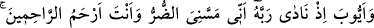

SEN,
MERHAMETLİLERİN
EN MERHAMETLİSİSİN
83. Eyyûb’u da (an). Hani Rabbine: “Başıma bu dert geldi. Sen, merhametlilerin
en merhametlisisin” diye niyâz etmişti.
84. Bunun üzerine biz, tarafımızdan bir rahmet ve kulluk edenler için bir hatıra
olmak üzere onun duâsını kabul ettik; kendisinde dert ve sıkıntı olarak ne varsa
giderdik ve ona aile efradını, ayrıca bunlarla birlikte bir mislini daha verdik.
85. İsmail’i, İdris’i ve Zülkifi de (yâdet). Hepsi de sabreden kimselerdendi.
86. Onları rahmetimize kabul ettik. Onlar hakikaten iyi kimselerdendi.
“Eyyûb’u da” yâni onun haberini de an. Âlimler Hz. Eyyûb’un; Rum b. Iys b. İbrahim
(a.s.)’a kadar soyunda ittifak ettikten sonra nesebinin bundan sonraki isimlerinde ihtilaf
etmişlerdir.
Rivâyete göre Allah Teâlâ Eyyûb’a peygamberlik verdi ve onu Harran halkına
gönderdi. Harran Şam’ın güneyindeki Gûta vahasında bir şehirdir. Hz. Eyyûb’un malı
ve ailesi çoktu. Onun yedi oğlu ve yedi kızı ile türlü hayvanlardan sayılamayacak kadar
malı vardı. İblis bunu kıskandı ve şöyle dedi: “İlâhî! Senin kulun sıhhat ve afiyet
içindedir, maîşet bolluğunda yaşıyor. Malı çok, ulu ve saygın çocukları var. Eğer ondan
mal ve evlâdı alır belâ ve sıkıntıya mübtelâ kılarsan, hemen senden yüz çevirir ve
küfrân-ı nimet yolunu seçer.” Hak Teâlâ: “Gerçek senin dediğin gibi değildir. O (Eyûb
a.s.) makbûl bir kulumuzdur. Eğer bin defa belâ ve musîbet potasında eritsem, kinsiz
garazsız tam ayar olarak çıkar.” buyurdu.
Aşkta öyle samimiyim ki, eğer başıma kılıç vuracak olsan
İmtihan günü mum gibi dimdik durur, bir yere gitmem
Hak Sübhânehû ve Teâlâ, Eyyûb (a.s.) üzerine belâ ve sıkıntılar verdi; develeri
yıldırımlar sebebiyle helâk oldu. Koyunları sel yüzünden yokluk girdabına düştü.